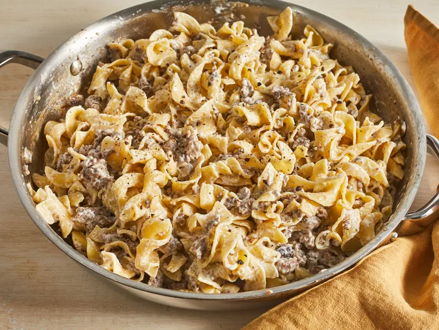

Beef Stroganoff
Homepage

Photo: Beef Strognaoff
Description:Beef stroganoff is an iconic Russian dish that consists of beef in a creamy sauce. According to legend, it was created by chefs who worked for the Stroganov family in the 1800s. The dish is often made with mushrooms and served over rice or egg noodles.
Ingredients
- 1(8 ounce) package egg noodles
- 1 pound ground beef
- 1(10.5 ounce) can fat-free condensed cream of muschroom soup
- 1 tablespoon garlic powder
- 1/2 cup sour cream
- salt and ground black peppere to tase
Steps
- Gather all ingerdients.
- Sauté ground beef in a large skillet over medium heat until browned and crumbly; 5 to 10 minutes.
- At the same time, fill a large pot with lightly salted water and bring to a rapid boil. Cook egg noodles at a boil until tender yet firm to the bite, 7 to 9 minutes. Drain and set aside.
- Drain and discard any fat from the cooked beef. Stir condensed soup and garlic powder into the beef. Simmer for 10 minutes, stirring occasionally.
- Remove beef from the heat. Add egg noodles and stir to combine. Stir in sour cream and season with salt and pepper.
- Serve hot and enjoy!